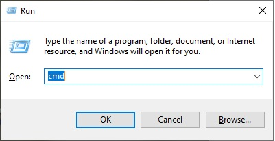
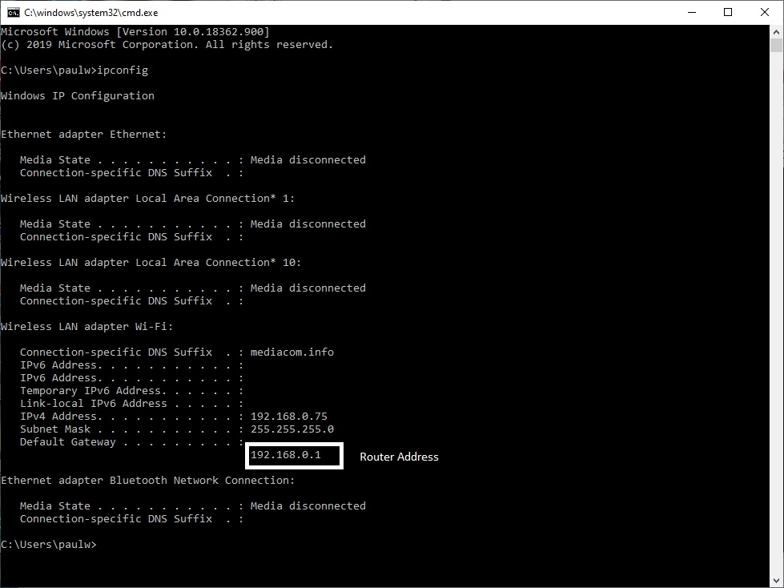
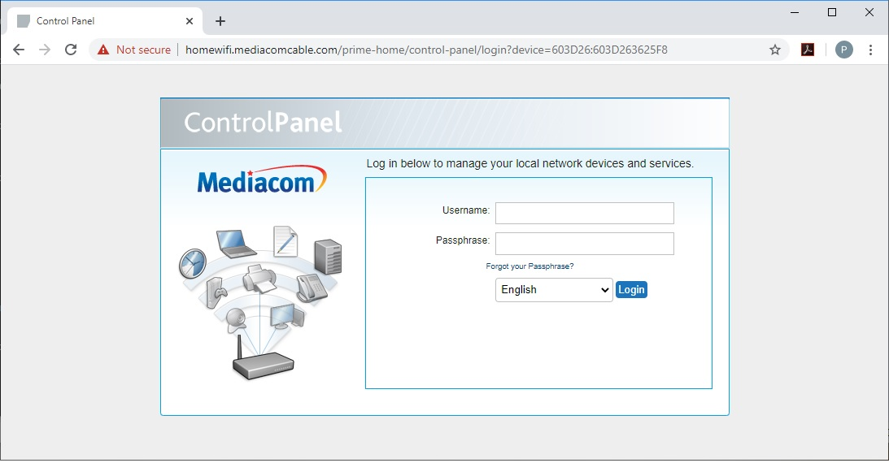
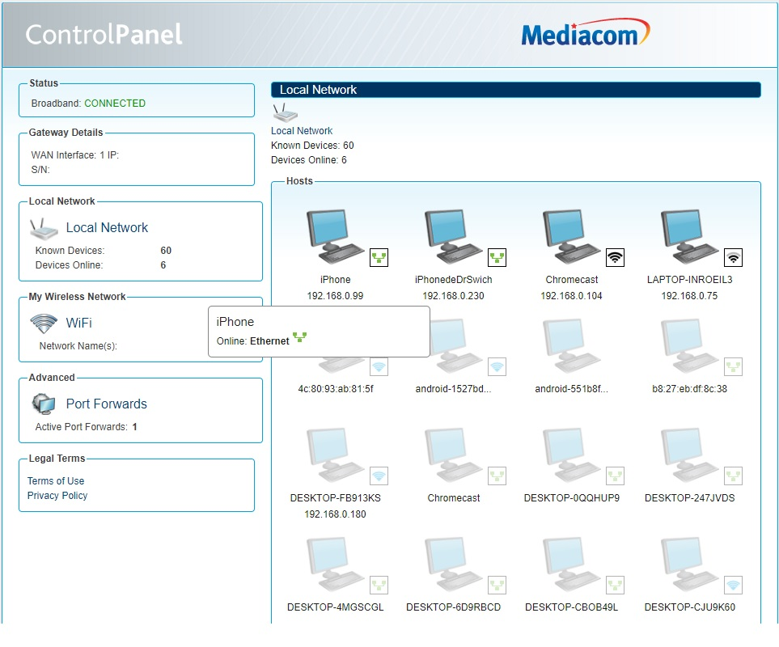
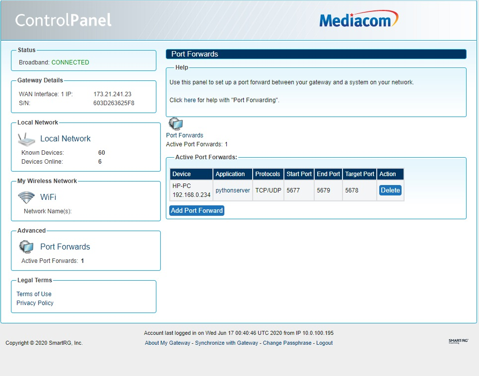
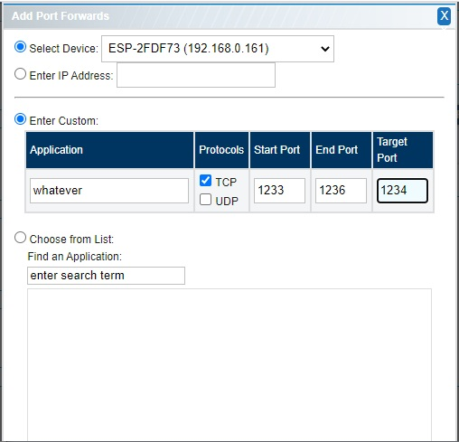

How to Port Forward (MediaCom)
Determine location of router (probably 192.168.0.1)
To determine the location of the router run ipconfig:
Hold the windows key and press the "r" key
Enter cmd

Enter ipconfig

The address of the Default Gateway is the local ip address of your router
Login to the router config page
Open a browser and enter the ip address of your router (probably 192.168.0.1), ignore the not-secure messages, if they appear
At this point you will probably need to call Media Com. Let them know you are trying to "port forward". Have a recent copy of your bill because they will ask for your pin.
Also if you are not 18, have your parents nearby, because Media Com will need their permission to continue
Media will let you know your user name and password, stay on the line with them as you login

Media Com control panel and port forward
Press the port forward on the control panel under Advanced

This will list your current port forwards

Press Add Port Forward, and select the computer that you want to make visible to the outside world and its port.

Press Save